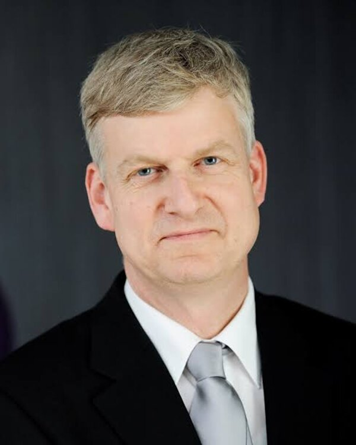

Celonis

Wil van der Aalst
Celonis · Chief Scientist
RWTH 아헨 공과대학의 알렉산더 폰 훔볼트(Alexander von Humboldt) 교수로 프로세스·데이터 사이언스(PADS) 그룹을 이끌고 있으며, Celonis의 수석 과학자(Chief Scientist)입니다. 포항공과대학교(POSTECH) ‘Wil van der Aalst Data & Process Science Research Center’의 명예 센터장도 맡고 있습니다.